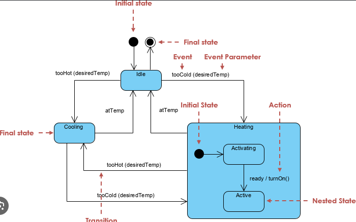

State Diagram
State diagram kirjeldab objekti erinevaid olekuid
ning üleminekuid nende vahel.
Kus kasutatakse?
- Süsteemi käitumise modelleerimisel
- Töövoogude kirjeldamisel
- Automaatide ja protsesside modelleerimisel
Peamised elemendid
- Initial State – algolek
- State – olek
- Transition – üleminek
- Final State – lõppolek

Tagasi UML indeksisse